class: center, middle # EE-464 STATIC POWER CONVERSION-II # Controller Design in Power Electronics ## Ozan Keysan ## [keysan.me](http://keysan.me) ### Office: C-113 <span class="meta">•</span> Tel: 210 7586 --- # Control in Power Electronics ## Control of a Wind Turbine -- 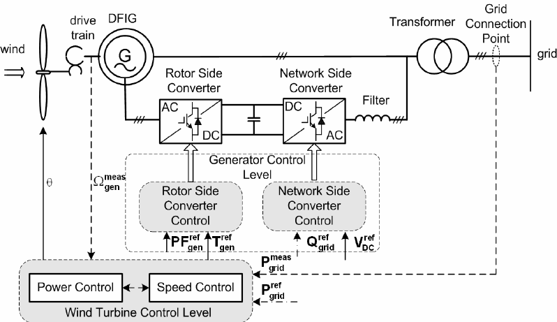 --- ## Detailed Control of a Wind Turbine 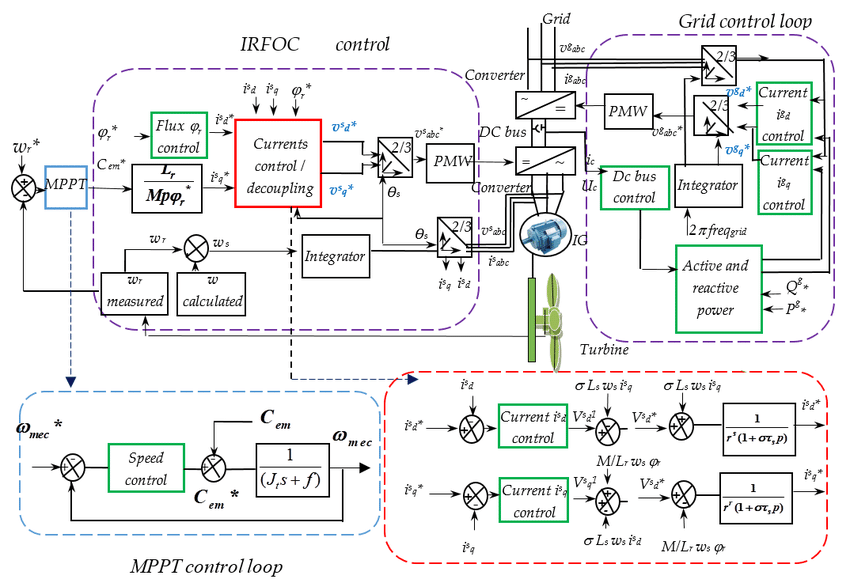 --- # Control in Power Electronics -- ## Most DC/DC converters controlled by analog controllers: -- - ### Micro-controllers are not fast enough (both for computing and sampling) at high switching frequencies -- - ### Cheap (just an IC and a few passive elements) -- - ### Could be integrated to with drive circuit ([LM1771](http://www.ti.com/product/LM1771/datasheet/abstract#snvs44619)) --- # Control in Power Electronics <img src="http://ecee.colorado.edu/ecen4517/exp/exp3/BuckMPPT.gif" alt="Drawing" style="width: 700px;"> ## Control with a microcontroller --- # Control in Power Electronics <img src="https://m.eet.com/media/1120288/c0799-figure1.gif" alt="Drawing" style="width: 500px;"> ## Control with an error amplifier --- ## Buck Converter Controller -- 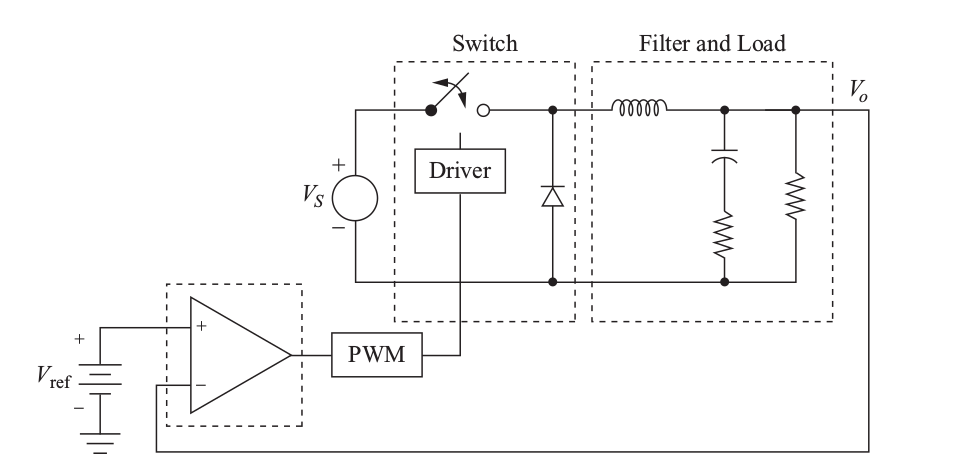 --- ## Buck Converter Controller -- 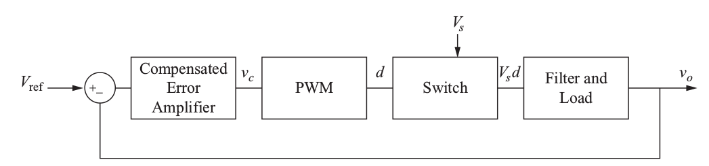 --- # Control Loop Stability ## Don't worry, will be revisited! -- - ## Small steady-state error -- (i.e. gain at low frequencies should be large) -- - ## No resonance -- (i.e. gain at switching frequency should be small) -- - ## Enough [phase-margin](https://www.youtube.com/watch?v=ThoA4amCAX4) -- ( usually at least 45 degree phase margin is aimed for stability) --- # Phase Margin <img src="https://microchip.wdfiles.com/local--files/asp0107%3Aphase-gain-margins/GainPhaseMargins.png" alt="Drawing" style="width: 450px;"> ## Difference to -180 degrees when the gain is unity (0dB) --- # Phase Margin <img src="https://m.eet.com/media/1054965/BassoFig39x.jpg" alt="Drawing" style="width: 750px;"> --- # Small Signal Analysis ## Don't worry, will be revisited! -- ### Small Signal Model of a Transistor (EE311) <img src="https://www.allaboutcircuits.com/uploads/articles/BJTs_after_Biasing_hybrid-pi_model.jpg" alt="Drawing" style="width: 500px;"> --- # Small Signal Analysis for the Buck Converter 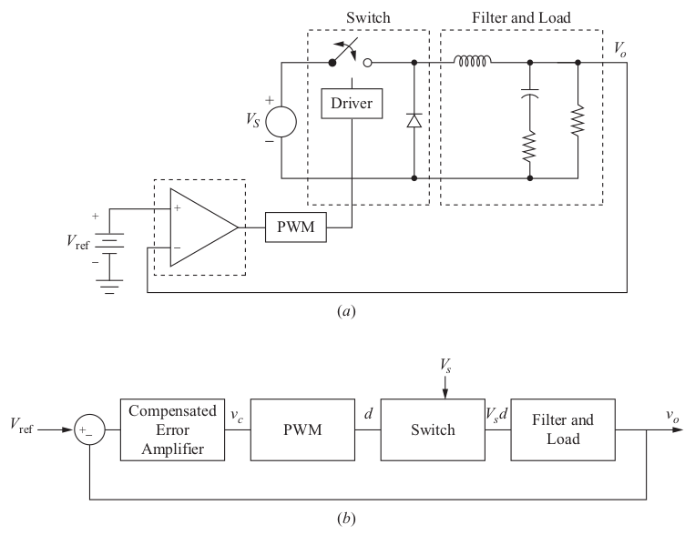 --- # Small Signal Analysis -- ## For a parameter, x: -- - ## \\(x\\): total quantity -- - ## \\(X\\): steady-state (DC) component -- - ## \\(\tilde{x}\\): AC term (small-signal variation) -- ## \\(x = X + \tilde{x}\\) --- # Small Signal Analysis -- ## For the buck converter ## \\(v_o = V_o + \tilde{v}_o\\) ## \\(d = D + \tilde{d}\\) ## \\(i_L = I_L + \tilde{i}_L\\) ## \\(v_s = V_s + \tilde{v}_s\\) --- # Small Signal Analysis ## Average Model of the buck converter 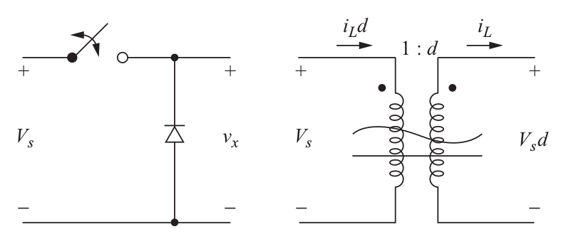 --- # Small Signal Analysis for the Buck Converter ## Let's derive the small signal model for voltage -- ### \\(v_x = V_s d \\) -- \\( = (V_s + \tilde{v}_s ) (D + \tilde{d} ) \\) -- ### \\(v_x = V_s D + \tilde{v}_s D + V_s \tilde{d} + \tilde{v}_s \tilde{d} \\) -- ## ignoring the last term -- ### \\(v_x \approx V_s D + \tilde{v}_s D + V_s \tilde{d}\\) --- # Small Signal Analysis for the Buck Converter ## Let's repeat for current ### \\(i_s = i_L d = (I_L + \tilde{i}_L)(D +\tilde{d})\\) ### \\(\approx i_L D + I_L \tilde{d}\\) --- # Buck Converter Small Signal Model -- 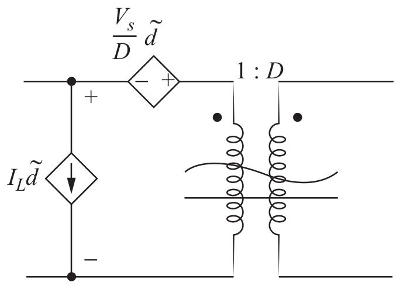 --- # Transfer Functions -- ## RC Filter -- <img src="https://www.mathworks.com/help/examples/analogdevicesadalm1000_product/win64/RCCircuit.png" alt="Drawing" style="width: 800px;"> --- # Transfer Functions -- ## RC Filter [Bode Plot](http://www.onmyphd.com/?p=bode.plot) -- <img src="https://i.stack.imgur.com/ukOfZ.png" alt="Drawing" style="width: 600px;"> ### [Bode Plotter](http://www.onmyphd.com/?p=bode.plot.online.generator) ,[Wolfram Alpha Plotter](https://www.wolframalpha.com/input/?i=transfer+function+(1)%2F(3*(s%5E2%2B2*s%2B1)) --- ## Transfer Functions ## Let's do for the LCR part of the converter -- 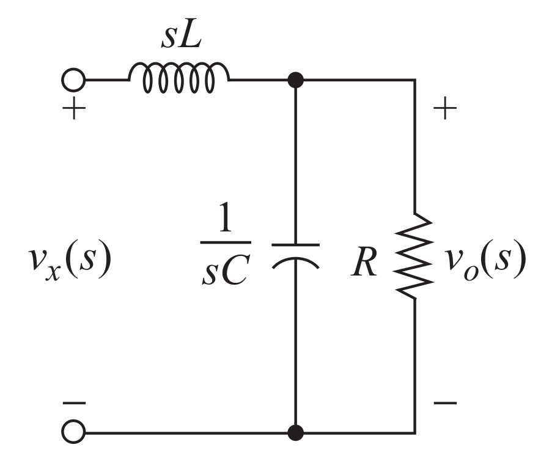 ### Representation in the s-domain --- ## Transfer Functions ## Let's do for the LCR part of the converter -- ### \\(\dfrac{v_o(s)}{v_x(s)}=\dfrac{1}{LC(s^2 +(1/RC)s+1/LC)}\\) -- ### \\(v_x(s)= V_s d(s)\\) -- ### Transfer function in terms of d(s) ### \\(\dfrac{v_o(s)}{d(s)}=\dfrac{V_s}{LC(s^2 +(1/RC)s+1/LC)}\\) --- # Realistic RLC -- ## Non-ideal elements can effect stability -- - ## Resistance of the inductor -- - ## ESR of capacitor (series resistance) --- ## Let's repeat the case with non-ideal capacitor -- 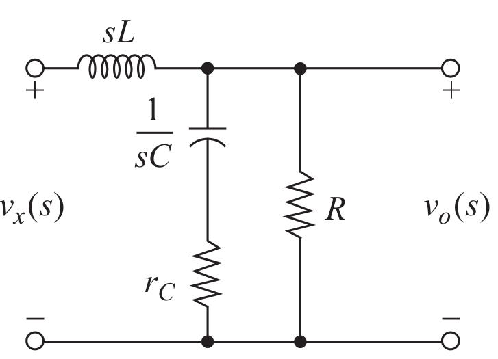 ## Capacitor with series resistance --- ## Let's repeat the case with non-ideal capacitor -- ### \\(\dfrac{v_o(s)}{d(s)}=\\) -- #### \\(\dfrac{V_s}{LC}\dfrac{1 + s r_C R}{s^2(1+r_C/R) +s(1/RC+r_C/L)+1/LC)}\\) -- ### Can be simplified by assuming \\(r_C << R\\) -- ### \\(\dfrac{V_s}{LC}\dfrac{1 + s r_C R}{s^2 +s(1/RC+r_C/L)+1/LC)}\\) -- ### Notice the extra zero introduced by ESR! --- ### PWM Block Transfer Function -- ## \\(d=\dfrac{v_c}{V_p}\\) ### for a saw-tooth PWM generator with Vp peak voltage -- ### Transfer function ## \\(\dfrac{d(s)}{v_c(s)}=\dfrac{1}{V_p}\\) --- ## PWM Block Transfer Function ## Be careful with high-frequency control bandwidth -- 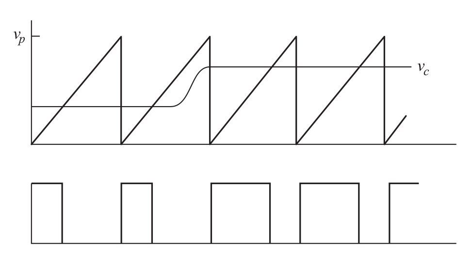 --- ## What about in switching components? -- ## Problem: -- - ## Multi-mode systems (topology changes with switching) -- - ## Different transfer function for on-off states -- - ## Can use non-linear controller, or multiple linear controllers (but difficult to implement) --- ## What about in switching components? -- ## Solution: -- - ## Convert multi-mode to single-mode system -- - ## Linearizing the system with averaging wrt duty cycle -- - ## Use a linear controller with required characteristics -- ## Details in the textbook (Mohan) --- # Case Study (Mohan 10-1) ## Find the transfer function of forward converter -- 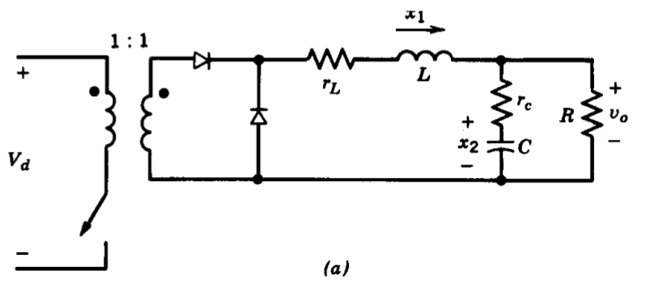 ## Note the state variables --- # Case Study (Mohan 10-1) ## Switch ON <img src="./images/ee464/forward_controller_on.png" alt="Drawing" style="width: 700px;"> --- # Case Study (Mohan 10-1) ## Switch OFF 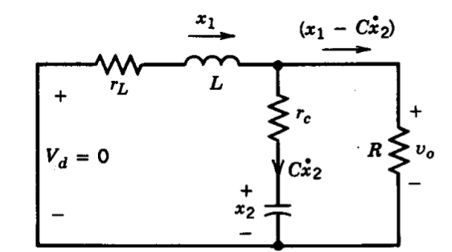 --- # Case Study (Mohan 10-1) ## Steady State Transfer Function -- ### \\(\dfrac{V_o}{V_d} = -C A^{-1}B\\) -- ### \\(\dfrac{V_o}{V_d} = D \dfrac{R+ r_C}{R+(r_C + r_L)}\\) -- ### If parasitic resistances are small -- ### \\(\dfrac{V_o}{V_d} \approx D \\) --- # Case Study (Mohan 10-1) ## AC Transfer Function -- ### \\(T_p(s)=\dfrac{\tilde{v}_o(s)}{\tilde{d}(s)}\\) -- ### \\(=V_d \dfrac{1 + s r_C C}{LC [s^2 + s (1/RC + (r_C + r_L)/L)+ 1/LC]}\\) -- ## Remember this equation? -- ### \\(s^2 + 2 \xi \omega_0 s + \omega_0^2\\) --- # Case Study (Mohan 10-1) ## AC Transfer Function ### \\( s^2 + 2 \xi \omega_0 s + \omega_0^2\\) -- ### \\(\omega_0 = \dfrac{1}{\sqrt{LC}}\\) -- ### \\(\xi = \dfrac{1/RC + (r_C + r_L)/L}{2\omega_0}\\) --- # Case Study (Mohan 10-1) ## AC Transfer Function Becomes ### \\(T_p(s)=V_d \dfrac{\omega_0^2}{\omega_z} \dfrac{s + \omega_z}{s^2 + 2 \xi \omega_0 s + \omega_0^2}\\) ### where \\(\omega_z = \dfrac{1}{r_C C}\\) --- # Example (Mohan 10-1) ### Put the parameters into the equation #### \\(V_d = 8 V\\) #### \\(V_o = 5 V\\) #### \\(r_L = 20 m\Omega\\) #### \\(L = 5 \mu H\\) #### \\(r_C = 10 m\Omega\\) #### \\(C = 2 mF\\) #### \\(R = 200 m\Omega\\) #### \\(f_s = 200 kHz\\) --- # Example (Mohan 10-1) ## Bode Plot (Gain) 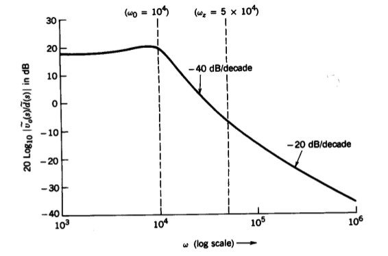 --- # Example (Mohan 10-1) ## Bode Plot (Phase) 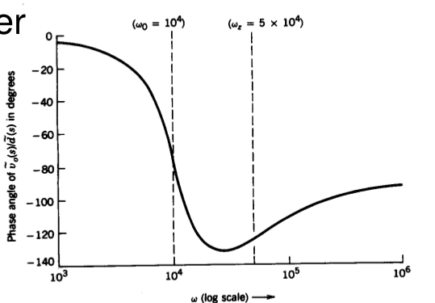 --- # Flyback Converter -- #### Equation 10-86 ### \\(T_p(s)=\dfrac{\tilde{v}_o(s)}{\tilde{d}(s)}\\) -- ### \\(T\_p(s)=V\_d f(D) \dfrac{(1 + s/\omega\_{z1})(1 - s/\omega\_{z2})}{as^2 + bs + c}\\) --- # Flyback Converter -- ## Bode Plot (Gain) 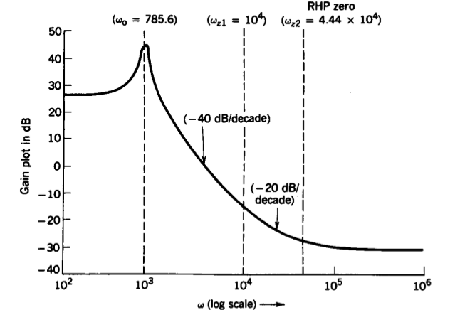 --- # Flyback Converter -- ## Bode Plot (Phase) 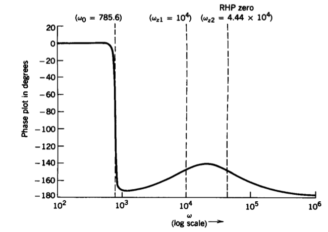 --- ## A few readings for controller design -- - ### [Control Design of a Boost Converter Using Frequency Response Data](https://www.mathworks.com/help/slcontrol/examples/control-design-of-a-boost-converter-using-frequency-response-data.html) - ### [PID Control Tuning for Buck Converter](https://www.mathworks.com/videos/pid-controller-tuning-for-a-buck-converter-1504291092156.html) - ### [Design digital controllers for power electronics using simulation](https://www.mathworks.com/discovery/power-electronics-simulation.html) - ### [Bode Response of Simulink Model](https://www.mathworks.com/help/slcontrol/gs/bode-response-of-simulink-model.html) - ### [How to Run an AC Sweep with PSIM?](https://www.youtube.com/watch?v=nbFo-NMeY_w) - ### [Peak Current Control with PSIM](https://powersimtech.com/drive/uploads/2016/03/Tutorial-Peak-current-mode-control.pdf) - ### [Plexim-Frequency Analysis of Buck Converter ](https://www.plexim.com/support/application-examples/187) --- # Controller Design -- ## Generalized Compensated Error Amplifier -- 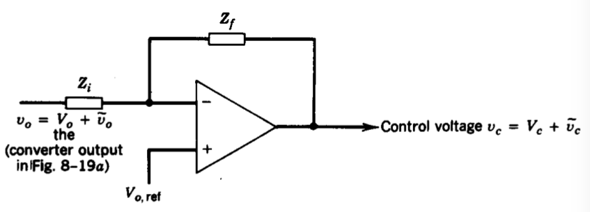 --- ## Types of Error Amplifier -- ### Common Ones: - ### Type-1 - ### Type-2 - ### Type-3 --- # Type-1 Error Amplifier <img src="https://venable.biz/wp-content/uploads/2017/09/type-1-amplifier.png" alt="Drawing" style="width: 600px;"> ## Simple Integrator ## Has one pole at the origin --- # Type-1 Error Amplifier <img src="https://venable.biz/wp-content/uploads/2017/09/type-1-amplifier-1.png" alt="Drawing" style="width: 600px;"> --- ## Type-2 Error Amplifier (Most Common Type) -- <img src="https://venable.biz/wp-content/uploads/2017/09/type-2-amplifier.png" alt="Drawing" style="width: 600px;"> ### Has two poles: at origin and one at zero-pole pair ### 90 degrees phase boost can be obtained due to single zero --- ## Type-2 Error Amplifier (Most Common Type) -- <img src="https://venable.biz/wp-content/uploads/2017/09/transfer-function-type-2-amp.png" alt="Drawing" style="width: 600px;"> ### Note the phase boost --- ## Type-3 Error Amplifier -- <img src="https://venable.biz/wp-content/uploads/2017/09/type-3-amp.png" alt="Drawing" style="width: 350px;"> ### has two zeros can can boost up to 180 degrees --- # A Few Examples 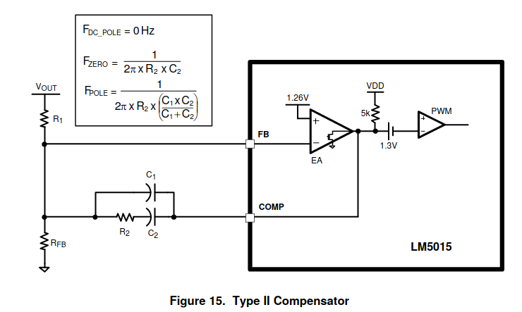 - ## [TL494](https://pdf.direnc.net/upload/tl494-datasheet.pdf), pg. 7, 15 - ## [LM5015](http://www.ti.com/lit/ds/snvs538c/snvs538c.pdf), Fig. 12, 15 --- ## Putting all Together -- ## A controller just increases the gain (Proportional) -- 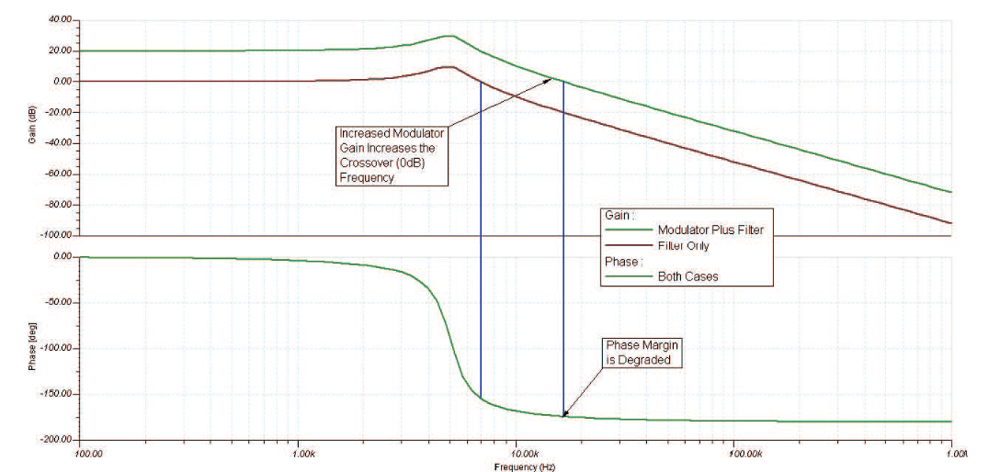 ### Increasing gain usually reduces phase margin (and reduces stability) --- ## Putting all Together -- ## A proper controller (adjust gain and phase margin) -- 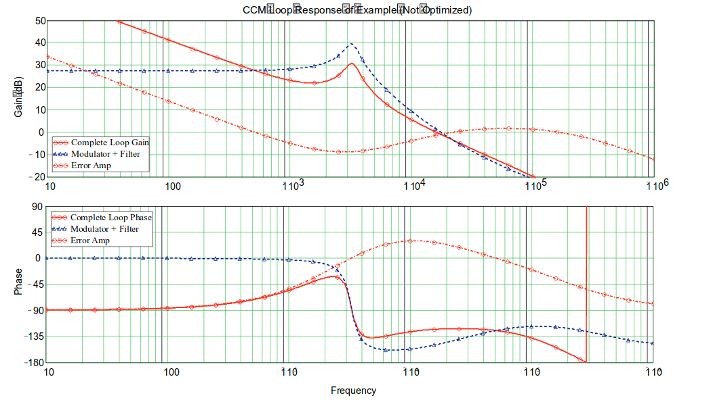 --- ## More Information <img src="http://sattalks.org/wp-content/uploads/icebergfloat-640x410.jpg" alt="Drawing" style="width: 600px;"> --- ## More Information - ### Fundamentals of Power Electronics, Erickson - ### [Phase Margin, Crossover Frequency, and Stability](https://www.eeweb.com/profile/cody-miller/articles/bode-plot-phase-margin-crossover-frequency-and-stability) - ### [Loop Stability Analysis of Voltage Mode Buck Regulator](http://www.ti.com/lit/an/slva301/slva301.pdf) - ### [DC-DC Converters Feedback and Control](http://www.onsemi.com/pub/Collateral/TND352-D.PDF) - ### [Modeling and Loop Compensation Design](http://cds.linear.com/docs/en/application-note/AN149fa.pdf) - ### [Compensator Design Procedure](https://www.infineon.com/dgdl/an-1162.pdf?fileId=5546d462533600a40153559a8e17111a) --- ## You can download this presentation from: [keysan.me/ee464](http://keysan.me/ee464) --- ## Saved for further reference ## Ready? -- ## Down the rabbit hole <img src="https://res.cloudinary.com/jerrick/image/upload/c_fit,f_auto,fl_progressive,q_auto,w_1140/qtx7wqekatzo2jjr8cgd" alt="Drawing" style="width: 400px;"> --- ## Linearization with State-Space Averaging -- - ## Represent everthing in matrix form -- - ## Inductor current, and capacitor voltage as state variables -- - ## Obtain two states (for switch on and siwtch off) -- - ## Find the weighted average --- ## Linearization with State-Space Averaging -- ## Obtain two states (for switch on and siwtch off) -- ## \\(\dot{x} = A_1 x + B_1 v_d\\) (for switch on, dTs) -- ## \\(\dot{x} = A_2 x + B_2 v_d\\) (for switch off, (1-d)Ts) ### where, A1 and A2 are state matrices ### B1 and B2 are vectors --- # Example: ## Mohan 10.1 --- ## Linearization with State-Space Averaging -- ## Find weighted average -- ## \\(A = d A_1 + (1-d) A_2\\) ## \\(B = d B_1 + (1-d) B_2\\) -- ## \\(\dot{x} = A x + B v_d\\) (for switch off, (1-d)Ts) --- ## Similar calculations for the output voltage ## \\(v_o = C_1 x \\) (for switch on, dTs) ## \\(v_o = C_2 x \\) (for switch off, (1-d)Ts) ## where C1 and C2 are transposed vectors --- ## Similar calculations for the output voltage ## \\(v_o = C x \\) ## \\(C = d C_1 + (1-d) C_2\\) ## where C1 and C2 are transposed vectors --- ### Use Small signal model Equations 10.46-10.52 -- ###\\(x = X + \tilde{x}\\) -- ### \\(\dot{\tilde{x}}= AX + B V_d + A\tilde{x}\\) ### \\( \quad \quad + [(A_1-A_2)X + (B_1 - B_2)V_d]\tilde{d}\\) -- ### In the steady state: ## \\(\dot{X}\\)=0 Use derivations from eq.10.53-10.59 --- # Steady State DC Voltage Transfer Function -- ## \\(\dfrac{V_o}{V_d} = -C A^{-1}B\\) --- # Small Signal Model to Get AC Transfer Function -- ### \\(T_p(s)=\dfrac{\tilde{v}_o(s)}{\tilde{d}(s)}\\) ### \\(=C[sI-A]^{-1}[(A_1-A_2)X + (B_1-B_2)V_d] \\) ### \\(\quad + (C_1-C_2)X)]\\) --- # Example (Mohan 10-1) ## Find the transfer function of forward converter -- ## Note the state variables --- # Example (Mohan 10-1) ## Switch ON -- <img src="./images/ee464/forward_controller_on.png" alt="Drawing" style="width: 700px;"> --- # Example (Mohan 10-1) ## Switch OFF -- --- # Example (Mohan 10-1) ## Steady State Transfer Function -- ### \\(\dfrac{V_o}{V_d} = -C A^{-1}B\\) -- ### \\(\dfrac{V_o}{V_d} = D \dfrac{R+ r_C}{R+(r_C + r_L)}\\) -- ### If parasitic resistances are small -- ### \\(\dfrac{V_o}{V_d} \approx D \\) --- # Example (Mohan 10-1) ## AC Transfer Function -- ### \\(T_p(s)=\dfrac{\tilde{v}_o(s)}{\tilde{d}(s)}\\) -- #### \\(T_p(s)=V_d \dfrac{1 + s r_C C}{LC [s^2 + s (1/RC + (r_C + r_L)/L)+ 1/LC]}\\) -- ## Remember this equation? -- ### \\(s^2 + 2 \xi \omega_0 s + \omega_0^2\\) --- # Example (Mohan 10-1) ## AC Transfer Function ### \\( s^2 + 2 \xi \omega_0 s + \omega_0^2\\) -- ### \\(\omega_0 = \dfrac{1}{\sqrt{LC}}\\) -- ### \\(\xi = \dfrac{1/RC + (r_C + r_L)/L}{2\omega_0}\\) --- # Example (Mohan 10-1) ## AC Transfer Function Becomes ### \\(T_p(s)=V_d \dfrac{\omega_0^2}{\omega_z} \dfrac{s + \omega_z}{s^2 + 2 \xi \omega_0 s + \omega_0^2}\\) ### where \\(\omega_z = \dfrac{1}{r_C C}\\) --- # Example (Mohan 10-1) ### Put the parameters into the equation #### \\(V_d = 8 V\\) #### \\(V_o = 5 V\\) #### \\(r_L = 20 m\Omega\\) #### \\(L = 5 \mu H\\) #### \\(r_C = 10 m\Omega\\) #### \\(C = 2 mF\\) #### \\(R = 200 m\Omega\\) #### \\(f_s = 200 kHz\\) --- # Example (Mohan 10-1) ## Bode Plot (Gain) --- # Example (Mohan 10-1) ## Bode Plot (Phase) --- # Flyback Converter -- #### Equation 10-86 ### \\(T_p(s)=\dfrac{\tilde{v}_o(s)}{\tilde{d}(s)}\\) -- ### \\(T\_p(s)=V\_d f(D) \dfrac{(1 + s/\omega\_{z1})(1 - s/\omega\_{z2})}{as^2 + bs + c}\\) --- # Flyback Converter -- ## Bode Plot (Gain) --- # Flyback Converter -- ## Bode Plot (Phase)